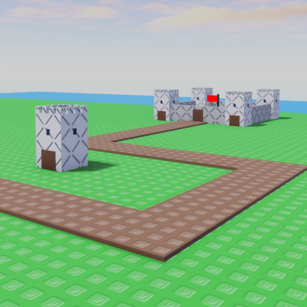

|  | |
| Length | 175 Studs |
|---|---|
| Cliffs | 11 |
| Date Added | December 15th, 2022 |
| Built By | coreyhsGames |
Castle is a medium/short map with castles. The map has castle towers along its path that can have cliff towers on them. The map has multiple corners and sharp curves. This map is actually based off a old map from Tower Battles, Castle.